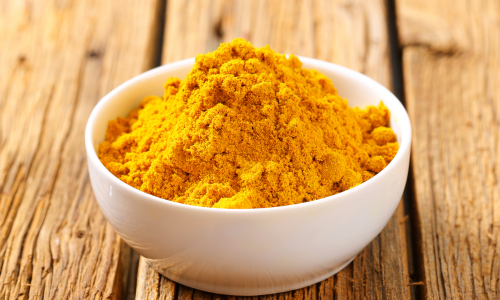

Curry Powder Substitute
Enjoy the rich, balanced taste of freshly combined spices in this homemade mix, which is perfect
for adding a burst of flavor to your favorite dishes.
Ingredients
- 4 tsp ground cumin
- 4 tsp ground coriander
- 2 tsp turmeric
- 2 tsp paprika
- 1 tsp ground ginger
- 1 tsp ground cinnamon (optional)
- 1/2 tsp cayenne pepper (optional, for heat)
Directions
- Add all the spices to an airtight container or ziplock bag, and shake well.
- Use this mix in place of curry powder in your favorite recipes.